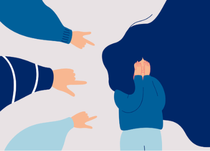

ALERTA
TEC
“Habla, nosotros te respaldamos”


Si deseas saber el seguimiento que se realiza al recibir tu denuncia, te invitamos a que conozcas nuestro protocolo.


Si deseas saber el seguimiento que se realiza al recibir tu denuncia, te invitamos a que conozcas nuestro protocolo.
Proporciona refugios y apoyo integral para víctimas de violencia. Aunque está dirigida principalmente a mujeres, brinda orientación a familiares y a las comunidades afectadas.
Sitio web: https://rednacionalderefugios.org.mx/ Ciudad de México: 55 56 74 96 95 y 55 52 43 64 32 Interior de la República: 800 822 44 60Brinda apoyo psicológico, legal y emocional para víctimas de violencia, tanto hombres como mujeres, mediante una línea de ayuda gratuita.
Sitio web: https://rutasparafortalecer.org/osc/fundacion-origen/ Email: contacto@rutasparafortalecer.orgOrganización especializada en la prevención y atención de la violencia de género, con especial enfoque en hombres, pero también en mujeres. Ofrecen talleres y asistencia psicológica.
Sitio web: https://gendes.org.mx/Aunque con sede en la Ciudad de México, CAPAS ofrece recursos e información accesibles desde cualquier parte de México para víctimas de agresión sexual, tanto hombres como mujeres.
Sitio web: https://www.fgjcdmx.gob.mx/nuestros-servicios/en-linea/mp-virtual/cta-centro-de-terapia-de-apoyo-victimas-de-delitos-sexualesOfrecen servicios y orientación tanto en línea como telefónica a personas afectadas por la violencia de género en todo México.
Sitio web: https://icl.inmujeres.gob.mx/Este protocolo guía los pasos que los estudiantes deben seguir para reportar casos de acoso o violencia dentro de la Universidad Nacional Autónoma de México (UNAM).
Sitio web: https://www.fis.unam.mx/pdfs/protocolo-de-actuacion-en-casos-de-violencia-de-genero.pdfOrganismo gubernamental con información y recursos para combatir la violencia de género, además de apoyo para víctimas.
Sitio web: https://www.gob.mx/conavimArtículo con información práctica para estudiantes universitarios que han experimentado violencia o acoso, brindando pasos a seguir y recursos disponibles.
Sitio web: https://espanol.womenshealth.gov/relationships-and-safety/sexual-assault-and-rape/college-sexual-assaultAutor: Felicidad Loscertales, Trinidad Núñez Domínguez
ISBN: 978-848-063-491-5 Libro que analiza los diferentes tipos de violencia dentro de las instituciones educativas, proporcionando alternativas para su prevención y manejo.Autor: Guzmán Acuña, Josefina, Guzmán Acuña, Teresa de Jesús.
ISBN: 978-607-524-064-0 Este libro ofrece investigaciones y estudios de casos sobre cómo la violencia de género afecta a las universidades en México.Autor: Angélica Aremy Evangelista García, Florencia Peña Saint Martin, Ramón Abraham Mena Farrera.
ISBN: 978-607-8767-38-0 Esta obra es una importante contribución a la trayectoria de investigación en México sobre acosos en las instituciones de educación superior (IES).